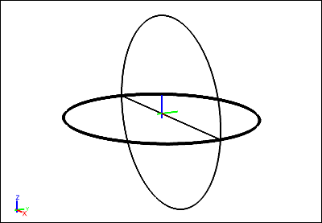

Fluid Flow Around a Sphere: Theory Comparison
Compare theoretical and Caedium simulation results (generated by the Panel Flow add-on) of the pressure coefficient on a sphere.
Goals
In this tutorial, you will learn how to:
- Read a file into Caedium
- Generate equations
- Export and import the data from an XY plot
- Compare the results of your simulation with a theoretical calculation of the same quantity
Assumptions
- You have activated the Caedium Panel Flow add-on or Caedium Professional.
- You are familiar with Caedium essentials.
- You have completed the Fluid Flow Around a Sphere tutorial and saved your simulation file, or you have downloaded the flow-over-sphere.sym file.
Read the Simulation File into Caedium
In the Home Toolbar click the Open button . Navigate to the location of the flow-over-sphere.sym file. Double-click on flow-over-sphere.sym to load it into Caedium.
Plot Pressure Coefficient on the Sphere Versus theta
In the tutorial Fluid Flow Around a Sphere, you plotted pressure coefficient versus X-position along the curved edge of the sphere shown in the diagram below. In the first step of this tutorial, you will plot the pressure coefficient (as calculated in your Caedium simulation) versus theta, where theta is defined in the diagram below. (theta=0 is in the Y-direction.)
The steps to calculate values of theta are:
- Create scalar R (the radius of the sphere)
- Create x/R, which is equal to sin(theta)
- Create theta, which is equal to arcsin(sin(theta))
Create Scalar R, the Radius of the Sphere
Select the New Toolbar and click the Result button  .
.
In the Create Result dialog, select the Constant tab. For Units, select Length.
Click Create to create a scalar.
Select the Results Tool Palette. Select Scalar Variables->Scalar (the scalar variable you just created), click on it again to make its name editable, and change Scalar to R.
In the Properties Panel, set the Value of R to 5. Press Enter on the keyboard to apply the changes to the Properties Panel.
Create sin(theta)
Remember that sin(theta)=x/R.
In the Create Result dialog, select the Binary tab. Select Divide from the list.
In the Results Tool Palette, select Vector Fields->XYZ (position). Verify that X is selected as the Scalar in the Properties Panel. Drag and drop Vector Fields->XYZ onto the left-hand target in the Create Result dialog. Select Scalar to specify the X-position as the left-hand variable for the equation.
Drag Scalar Variables->R from the Results Tool Palette and drop it onto the right-hand target in the Create Result dialog.
Click Create to create the scalar field x/R, which is equal to sin(theta). In the Results Tool Palette, select Scalar Fields->(XYZ:X / R), rename it sin(theta), and press Enter on the keyboard.
Create theta
Remember that theta=arcsin(sin(theta)).
In the Create Result dialog, select the Unary tab. Select aSin from the list. Drag Scalar Variables->sin(theta) from the Results Tool Palette and drop it onto the target in the Create Result dialog.
Click Create to create the scalar field theta. Click Close to close the dialog.
In the Results Tool Palette, select Scalar Fields->aSin(sin(theta)), rename it theta, and press Enter on the keyboard.
Plot Pressure Coefficient Versus theta
Select the Cp Plot Window (if it is not already selected). Drag and drop Scalar Fields->theta onto the background of the Plot Window. Select X Axis to display values of theta along the X-axis of the XY plot.
This is the Caedium simulation result of pressure coefficient versus theta for the sphere.
Calculate the Theoretical Values of Pressure Coefficient on the Sphere
In this step, you will use Caedium to perform a theoretical calculation of pressure coefficient on the sphere. The theory for this calculation is described in the example Potential Flow Around a Sphere.
The steps to calculate the theoretical values of pressure coefficient (Cp) are:
- Create scalars 1 and 9/4 (2.25)
- Create y/R, which is equal to cos(theta)
- Create cos2(theta)
- Create the equation Cp = 1 - 9/4 x cos2(theta)
Create the Scalars 1 and 9/4
Select the New Toolbar and click the Result button .
In the Create Result dialog, select the Constant tab. For Units, select None.
Click Create to create a scalar. Click Create again to create a second scalar.
In the Results Tool Palette, select Scalar Variables->Scalar. Click on it again to make its name editable, and change Scalar to 1.
In the Properties Panel, set the Value of 1 to 1 and press Enter on the keyboard.
In the Results Tool Palette, rename Scalar Variables->Scalar to be 9/4. In the Properties Panel, set its value to 2.25.
Create cos(theta)
Remember that cos(theta)=y/R.
In the Create Result dialog, select the Binary tab. Select Divide from the list.
In the Results Tool Palette, select Vector Fields->XYZ. In the Properties Panel, select Y as the Scalar.

Drag and drop Vector Fields->XYZ onto the left-hand target in the Create Result dialog. Select Scalar to specify the Y-position as the left-hand variable for the equation.
Drag Scalar Variables->R from the Results Tool Palette and drop it onto the right-hand target in the Create Result dialog.
Click Create to create the scalar field y/R. In the Results Tool Palette, select Scalar Fields->(XYZ:Y / R), rename it cos(theta), and press Enter.
You have now created all the elements necessary to calculate the theoretical values of pressure coefficient. Next you will assemble the parts of the equation Cp = 1 - 9/4 x cos2(theta).
Create cos2(theta)
In the Create Result dialog, with the Binary tab already selected, select Multiply from the list.
In the Results Tool Palette, select Scalar Fields->cos(theta), and drag and drop it onto the left-hand target in the Create Result dialog. Repeat the process to drop the Scalar Fields->cos(theta) tool onto the right-hand target. Click Create to create the scalar field cos2(theta). In the Results Tool Palette, select Scalar Fields->(cos(theta) x cos(theta)), rename it cos^2(theta), and press Enter.
Create 9/4 x cos2(theta)
In the Results Tool Palette, select Scalar Variables->9/4, and drag and drop it onto the left-hand target in the Create Result dialog. Drag and drop the Scalar Fields->cos^2(theta) tool onto the right-hand target.
Click Create to create the (9/4 x cos^2(theta)) tool in the Results Tool Palette.
Create Cp = 1 - 9/4 x cos2(theta)
In the Create Result dialog, select Subtract from the list.
In the Results Tool Palette, select Scalar Variables->1, and drag and drop it onto the left-hand target in the Create Result dialog. Drag and drop the Scalar Fields->(9/4 x cos^2(theta)) tool onto the right-hand target.
Click Create to create Cp. Click Close in the Create Result dialog.
In the Results Tool Palette, select Scalar Fields->(1 - (9/4 x cos^2(theta))), rename it Theory, and press Enter.
Plot Theoretical Values of Pressure Coefficient Versus theta
Select the View Window (view). Drag the Scalar Fields->Theory tool from the Results Tool Palette and drop it onto the edge of the sphere highlighted in the diagram below.

Double-click the edge in the Select dialog and select XY Plot to create an XY plot of pressure coefficient versus Y-position.
Note that the plot has XYZ:Y along the X-axis. By default, a variable is plotted against the scalar variable selected for XYZ (position). In a previous step, you selected Y as the scalar for position.
Drag and drop the Scalar Fields->theta tool onto the background of the Plot Window and select X Axis to plot theta along the X-axis.
Left-click the name of the edge in the Theory Plot Legend (edge_1 in this example). In the Properties Panel, set the Name to be Theory.
Compare Theoretical and Caedium Simulation Pressure Coefficients
To compare the pressure coefficient values from your Caedium simulation with the theoretical values, you need to plot both data sets on the same XY plot. To do this, you will first export the theoretical results, reload them into Caedium as imported data, and then plot them on the same XY plot as the Caedium simulation results.
Export the Theoretical Pressure Coefficient Data
Select the File Toolbar and click the Export button . Select the location to save the theoretical plot data, specify a File name (sphere-cp-theory) and select Plot Series (*.csv) as the file type. Click Save to export the theoretical pressure coefficient data.
Import the Theoretical Pressure Coefficient Data
Select the File Toolbar and click the Import button  . Select the location of the plot data you just saved. For the file type, select Plot Series (*.csv). Double-click on sphere-cp-theory.csv to import it into Caedium.
. Select the location of the plot data you just saved. For the file type, select Plot Series (*.csv). Double-click on sphere-cp-theory.csv to import it into Caedium.
The plot series will be visible in the Results Tool Palette, under Imported.
Plot the Imported Data and the Caedium Simulation Data on the Same XY Plot
Select the Cp Plot Window. Drag and drop the Imported->sphere-cp-theory.csv tool onto the Plot Window and select Done to plot the theoretical data on the same XY plot as the simulation data.
Left-click the red symbol in the Cp Plot Legend. In the Properties Panel, set the Line type to None, and set the Symbol to Circle Open.
In the Plot Window, select the black symbol in the Cp Plot Legend. In the Properties Panel, rename it to be Computation, and set the Symbol to None.
Notice the good agreement between the computational and theoretical values of pressure coefficient.
Feedback
Questions? Ideas? Problems?